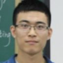
Bowen
张博文（Bowen），微信号 bowenjayconan，本科毕业于国际关系学院（UIR），后来到北航求学，也走进了北航 Toastmasters。在很长一段时间里，他是俱乐部对外的"联系人"——招新海报、会议预告末尾留下的那串电话号码常常就是他的，可以说是俱乐部门口那个最先迎客的人。
他的演讲旅程几乎走完了 CC 的全程：从 2015 年的破冰之作《Virgo》讲起，一路到《Wonderful Moments》《Far Away from Home》《My Grandpa》《Brother》，再到介绍母校的《UIR》、中文演讲《路过》，直至临别前的《Regaining the Meaning of Reading》和压轴的 CC10《无所谓》。他的演讲被点评者称为"富含逻辑性，论据丰富多彩，小到生活小事，大到人生处世态度，引人入胜"。他还和小伙伴一起创办了微信公众平台"霖文不讳"，是一个勇于表达自我的人。
作为前任主席，他被后辈亲切地称作"温柔前主席"。100 次纪念会议上，是"博文同学的游戏"环节最为活跃，奖品丰厚、设计精心，把全场逗得不亦乐乎；他也多次主持官员换届，深知"良好的工作交接会让每位官员都更省心"。无论是 Toastmaster、即兴主持，还是计时、主席台上的把控，他都接得住，是俱乐部运转里那种踏实可靠的中坚。
2017 年初的元旦会议上，俱乐部为这位"曾经的北航头马主席"举行了小小的送别，他为大家弹唱了一曲《花香》。即便毕业，他依然是一个"梦想实践者"——正如纪要里写的，"他结合了十年前的梦想，现在的自己没有让自己失望，未来的十年也不会让自己失望，爱拼才会赢"。头马人，永不毕业。
里程碑
- 2015-05-14 破冰首秀 CC1《Virgo》 ↗在第95次'演讲马拉松'会议上完成破冰演讲，正式登上头马舞台。
- 2015-06-17 100次纪念会议主持游戏 ↗在俱乐部里程碑式的第100次会议上，主持最活跃的游戏环节。
- 2016-03-11 春季比赛中文演讲选手《一号难求》 ↗代表俱乐部参加2016春季比赛中文背稿演讲，被称'温柔前主席'。
- 2017-01-06 毕业送别 & 弹唱《花香》 ↗164次元旦会议上俱乐部为这位前主席送别，他主持官员换届并弹唱《花香》。
- 2017-06-23 压轴 CC10《无所谓》 ↗毕业季会议上完成CC10，作为'梦想实践者'与俱乐部告别。
闯关之路 · Competent Communication
做过的演讲 · 10 场
担任过的职务 · 俱乐部官员
担任过的会议角色
为俱乐部做的事
- 担任北航Toastmasters主席，引领俱乐部发展并被后辈称为'温柔前主席'。
- 长期作为俱乐部对外联系人，招新海报与会议预告上常留他的电话，是迎接新人的第一道窗口。
- 多次担任Toastmaster与即兴主持TTM，把控会议节奏。
- 主持官员换届，确保工作平稳交接，他强调'良好的工作交接会让每位官员都更省心'。
- 在第100次纪念会议上设计并主持游戏环节，活跃全场气氛。
- 代表俱乐部参加春季比赛中文演讲，并协助组织联合会议(如北航&Ameco Excellent联合meeting)。
- 与小伙伴共同创办微信公众平台'霖文不讳'，践行勇于表达自我的理念。
照片墙 · 时间线
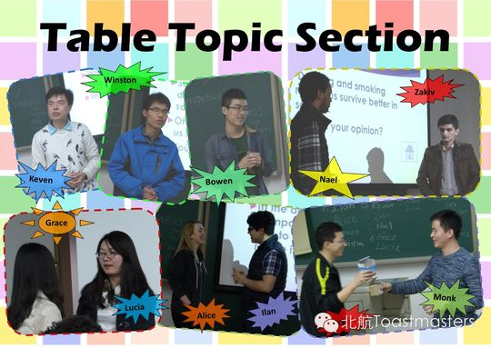
✓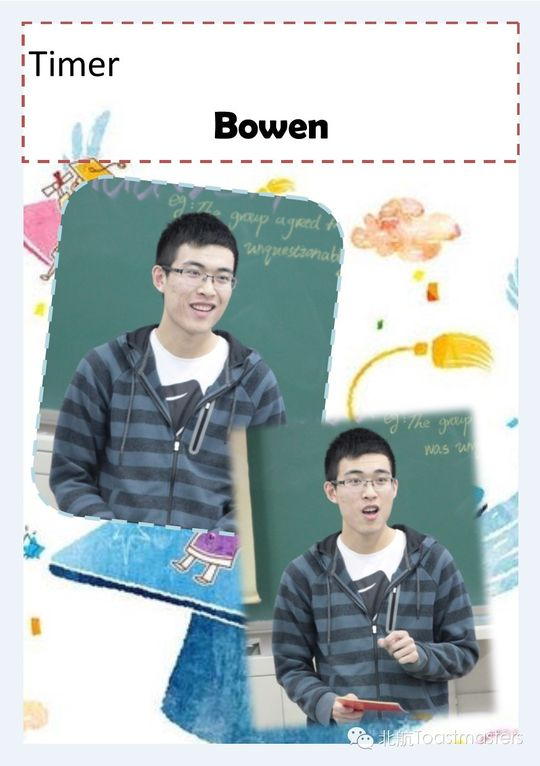
✓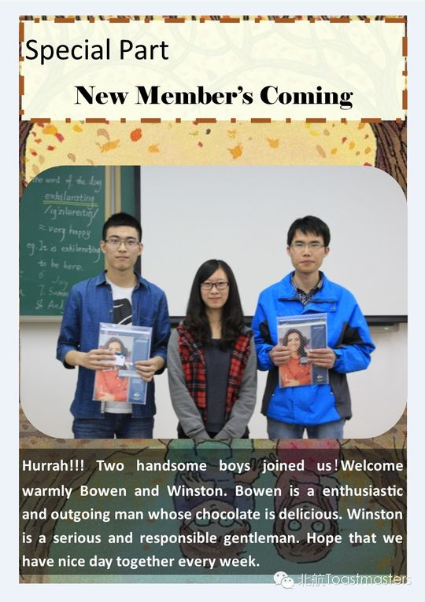
✓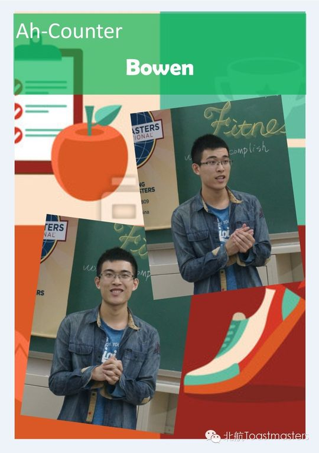
✓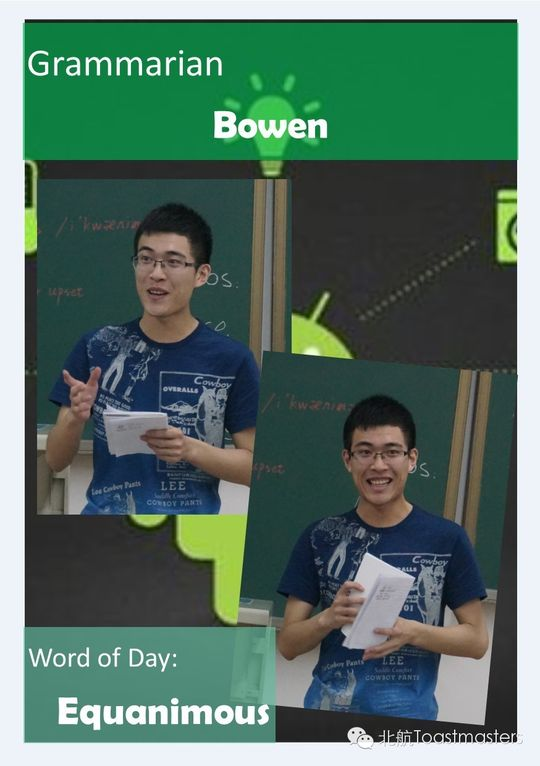
✓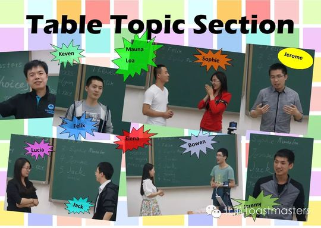
✓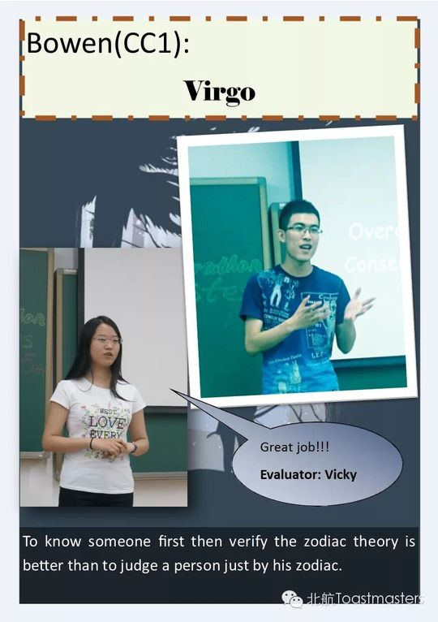
✓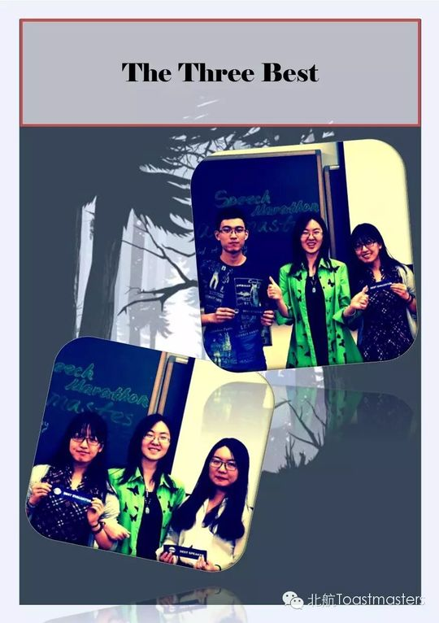
✓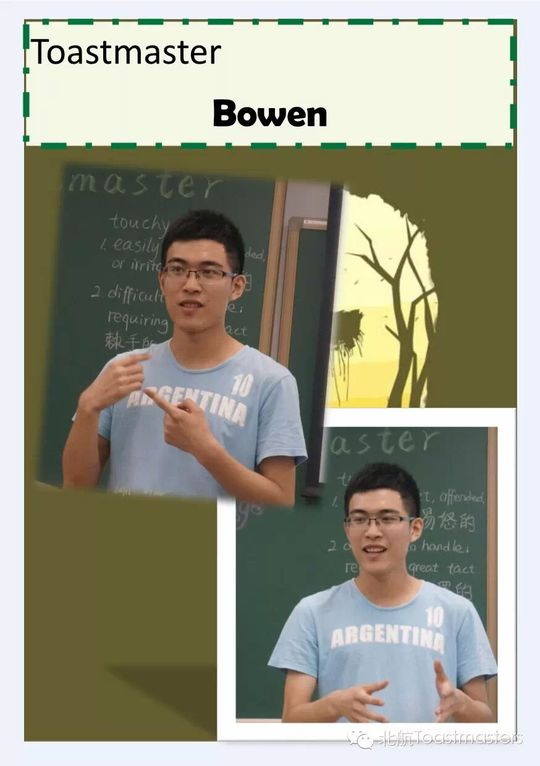
✓ ✓
✓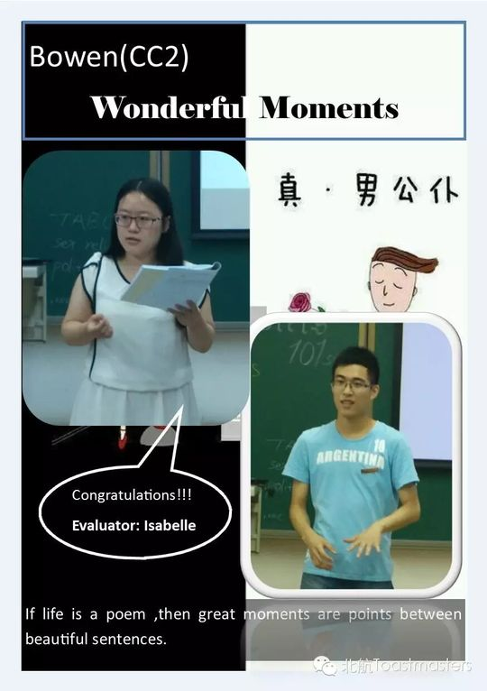
✓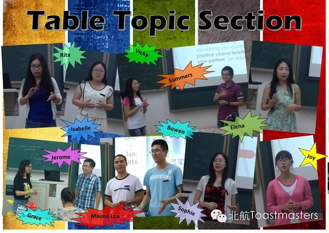
✓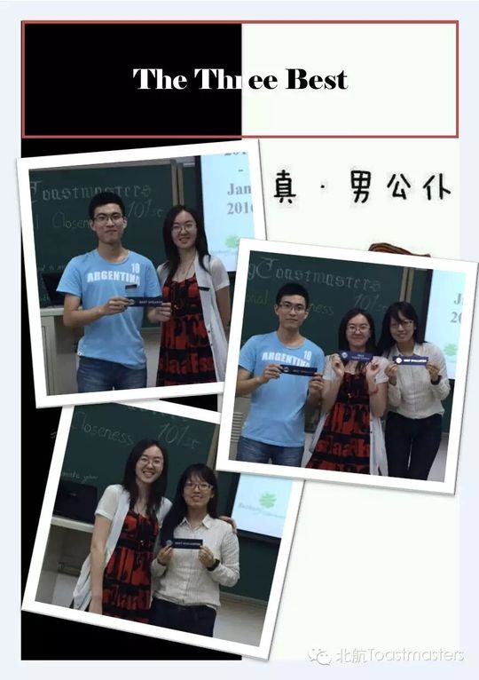
✓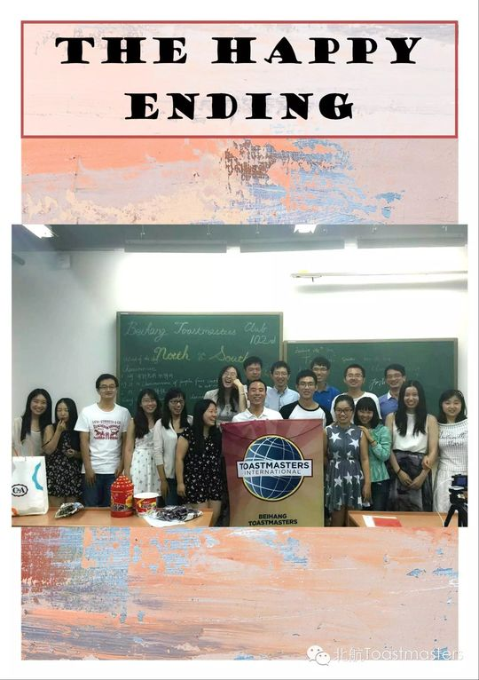
✓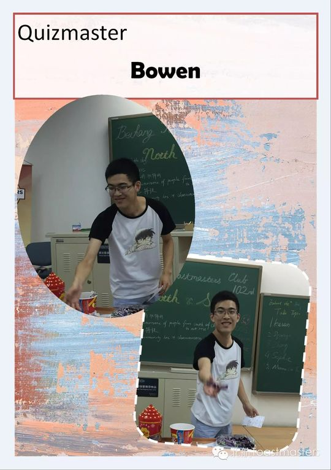
✓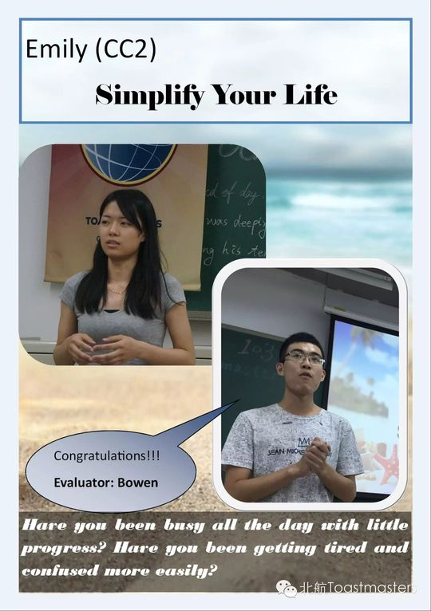
✓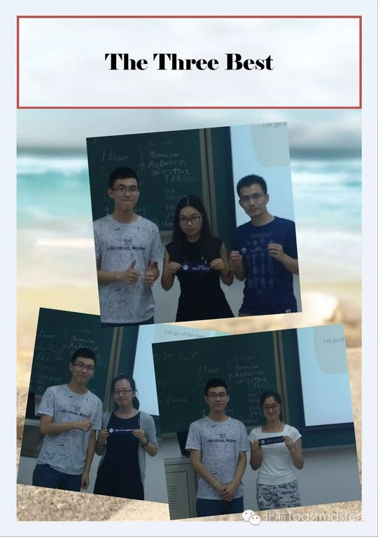
✓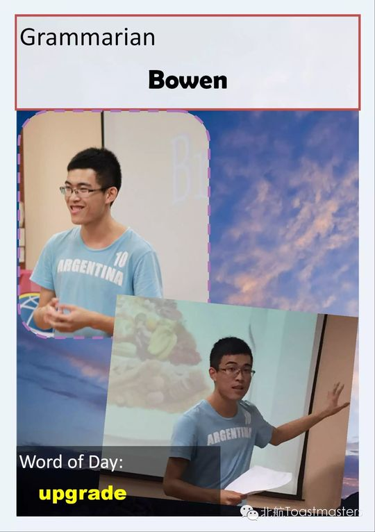
✓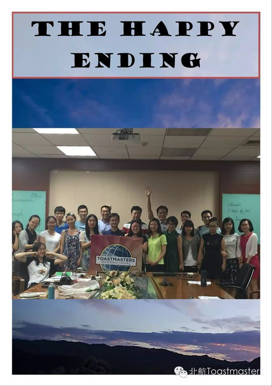
✓ ✓
✓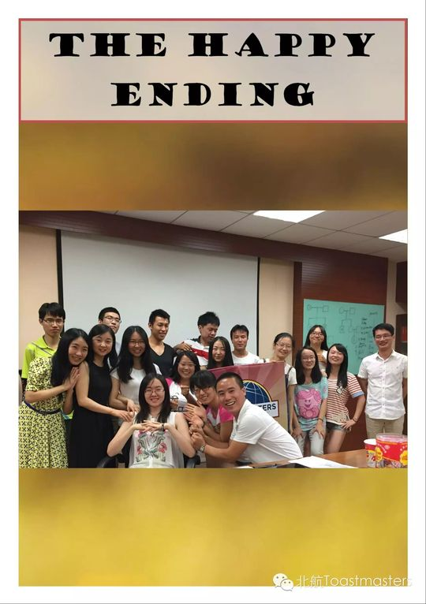
✓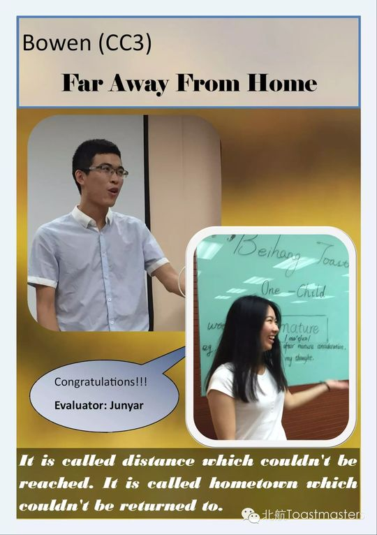
✓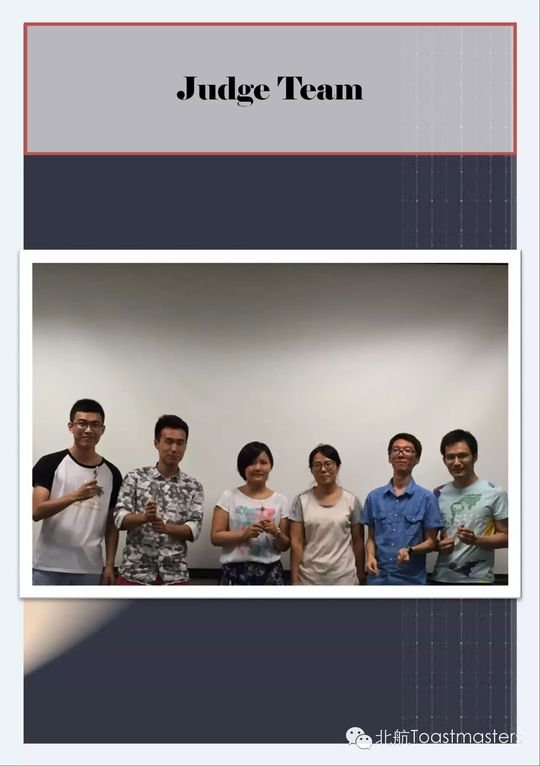
✓ ✓
✓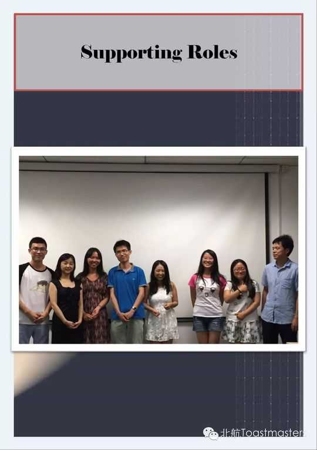
✓ ✓
✓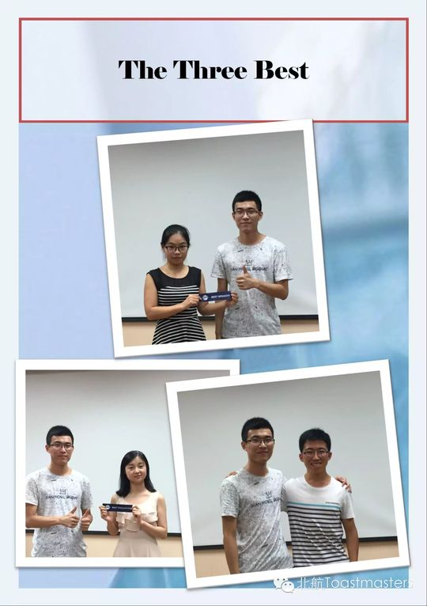
✓ ✓
✓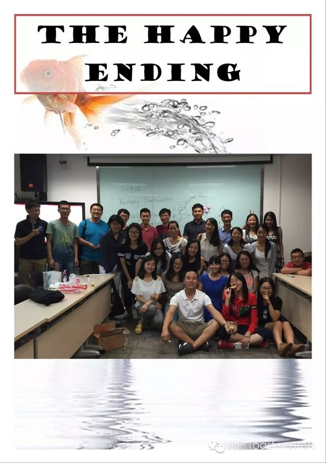
✓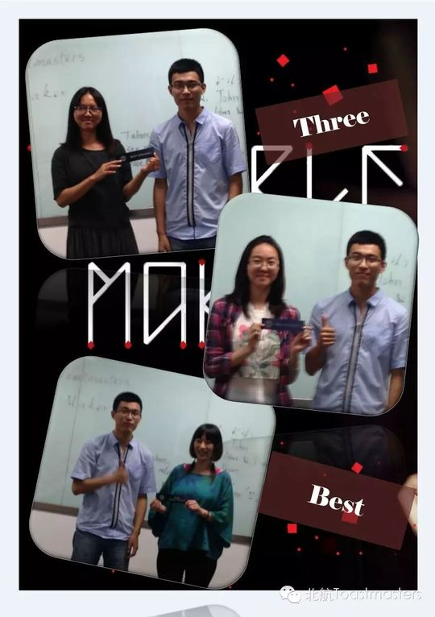
✓完整足迹 · 39 次出现（点开，每条可跳转原文）
- 2015-05-14第95次 · 做备稿演讲Virgo
- 2015-05-20第96次 · 担任第96次会议Table Topic Toastmaster
- 2015-06-05第98次 · 担任98次会议主持人
- 2015-06-17第100次 · 主持猜名字、吹气球答题等游戏环节
- 2015-06-25备稿演讲《Wonderful Moments》(101次会议预告)
- 2015-06-26第101次 · 备稿演讲《Wonderful Moments》
- 2015-07-24第105次 · 备稿演讲《Far Away from Home》，分享离家感受
- 2015-08-13第106次 · 作为会议联系人提供电话指引
- 2015-08-19第106次 · 担任会议主席
- 2015-09-04第109次 · 担任Table Topic Master
- 2015-09-17第111次 · 做CC4备稿演讲《My Grandpa》
- 2015-10-09第113次 · 会议预告：担任第113次会议主持人(TM)
- 2015-10-15第114次 · 会议预告：担任即兴演讲主持人(TTM)
- 2015-10-16招新文章中作为联系人留联系方式(张博文)
- 2015-10-19第114次 · 114th meeting minutes of BeihangTMC
- 2015-10-22这里将是你最愉快的拥有——北航Toastmasters
- 2015-11-11第118次 · 11.11@BeihangTMC 118th Meeting @19:30 No
- 2015-11-17第118次 · 118th meeting minutes of Beihang TMC
- 2016-03-04第127次 · Almost@BeihangTMC 127th Meeting 19:30 Ma
- 2016-03-09第127次 · 127th meeting minutes of Beihang TMC
- 2016-03-10第128次 · 2016 Spring Contest@Beihang TMC 128th Me
- 2016-03-16第128次 · Minutes of 2016 Spring Contest@Beihang T
- 2016-03-31April Fool
- 2016-04-09第132次 · To Make A Living@Joint with AEC, 132nd M
- 2016-04-13第132次 · Beihang&Ameco Excellent联合meeting@minutes
- 2016-04-27聊撩@Beihang TMC 135次（中文）会议 19:30 4月29日 新主
- 2016-05-19第138次 · 520@ Beihang TMC 138th Meeting 19:30 May
- 2016-05-20第138次 · 520@ Beihang TMC 138th Meeting 19:30 May
- 2016-05-26童真@Beihang TMC 139次（中文）会议 19:30 5月27日 新主
- 2016-06-02第140次 · Jack & Rose@ Beihang TMC 140th Meeting 1
- 2016-06-09第141次 · Let's celebrate together@ BeihangTMC 141
- 2016-06-14第141次 · Let’s celebrate together@minutes of Beih
- 2016-11-26第160次 · 朋友 @minutes of 北航 TMC 160th Meeting
- 2016-12-08第162次 · Role on the team @Beihang TMC162nd Meeti
- 2017-01-06第164次 · 元旦趴~~@minutes of Beihang TMC164th Meetin
- 2017-03-16第167次 · To be active@BeihangTMC 167th Meeting 19
- 2017-06-01第175次 · Ode to Joy@Beihang TMC175th Meeting@19:3
- 2017-06-06第175次 · Ode to Joy@BeiHang TMC 175th Meeting Min
- 2017-06-24第178次 · 毕业@BeiHang TMC 178th Meeting Minutes